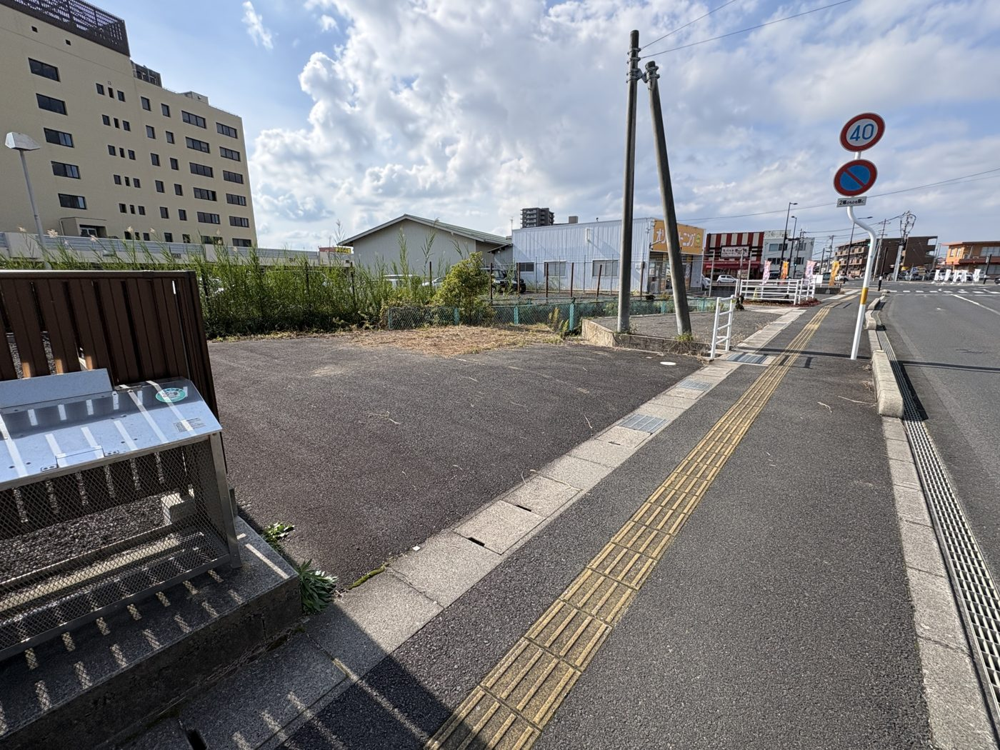

ACCESS
事務所へのアクセス
お車でお越しの方は、まず駐車場へお越しください。
P
まず駐車場に停める
黄色い看板の「オゾンクリーニング コインズ中野店」のすぐ東隣、川沿いの駐車場です。
歩いて事務所へ（約2分）
小さな川の橋を渡ってすぐ、ひの歯科クリニック隣の栄光ビル2階です。
駐車場
「オゾンクリーニング コインズ中野店」（黄色い看板）のすぐ東隣、川沿いの駐車場に停めてください。駐車場から事務所までは、小さな川にかかる橋を渡って歩いてすぐです。

所在地
| 会社名 | バンソウズ合同会社 |
|---|---|
| 住所 | 〒693-0012 島根県出雲市大津新崎町1丁目46-2 栄光ビル 2階 |
| 電話 | 080-1935-2913（石田） |
カーナビをお使いの方へ
- 目的地は「オゾンクリーニング コインズ中野店」（出雲市大津新崎町1丁目38）にしてください。その隣が駐車場です。
- 道に迷われたときは、お気軽にお電話ください。